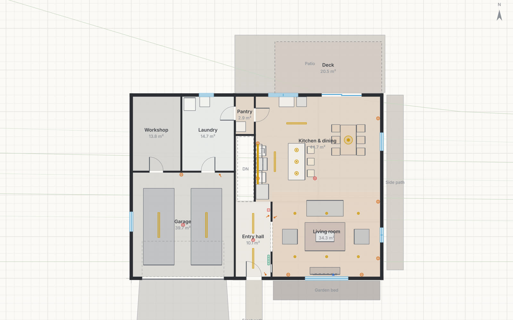
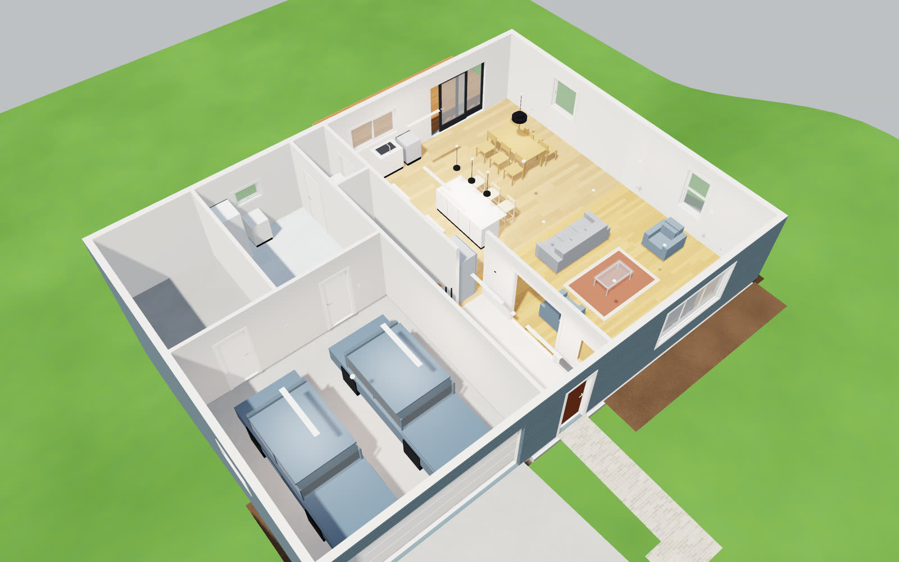
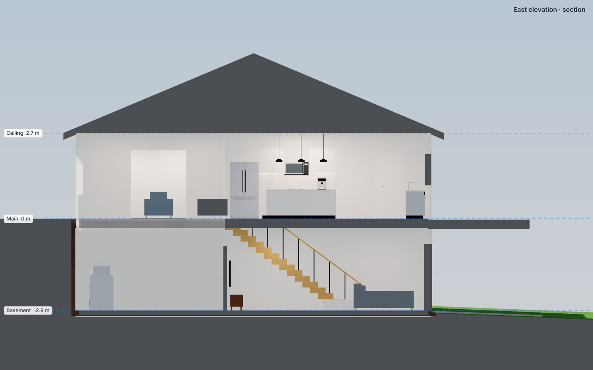
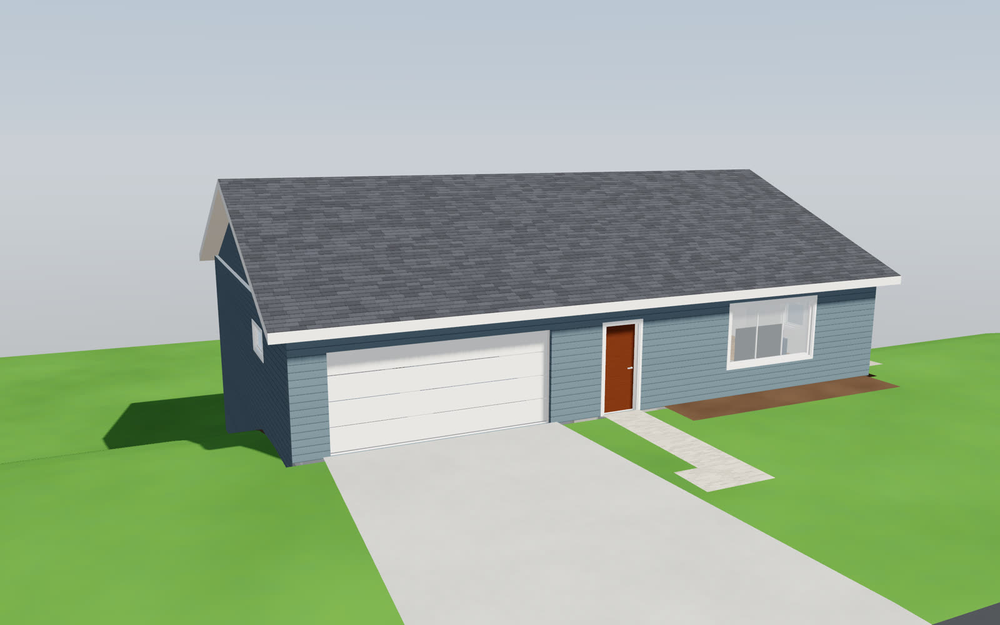
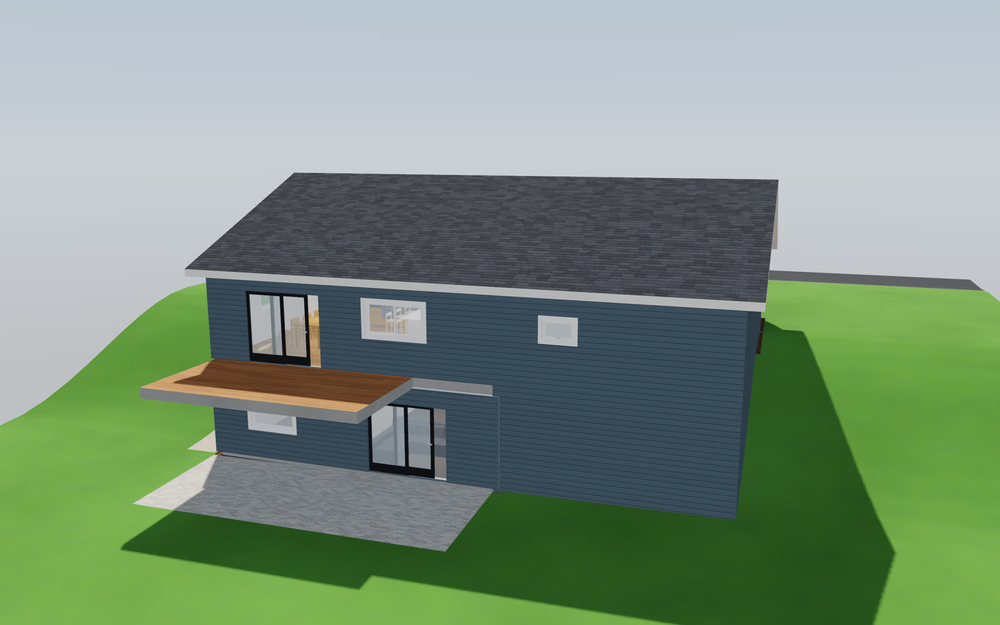
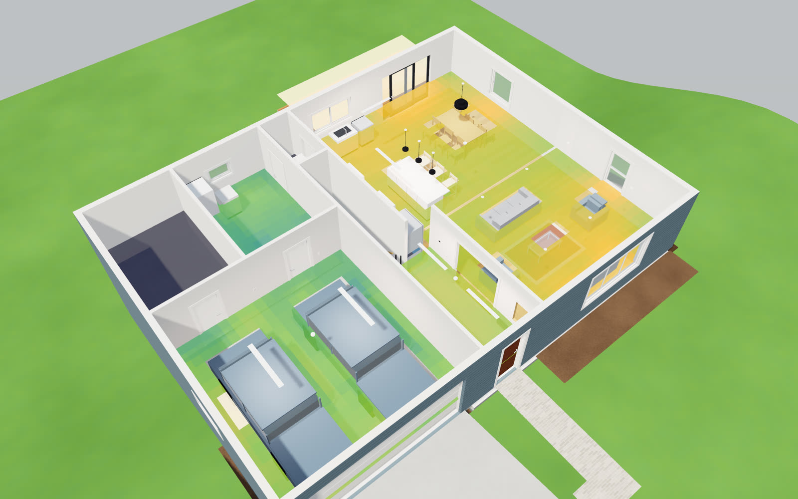

From above
Plan
Walls, doors, windows, furniture, and where every outlet, switch and light goes.
Lintel turns a floor plan into a model you can open up, cut through and light. Plan the change before you make it: move a wall, try the oak floor stained walnut, see where the afternoon sun lands in December.

SAMPLE HOUSE · MAIN LEVEL · ROOF OFF 21 JUNE · 40° NDrag the sun. These are renders from Lintel itself: the sun's position comes from the latitude, the date and the clock, and after dark the house is lit by its own lamps.
Drag out a wall and it snaps to the grid and to the walls it meets. Type a length the way you'd say it: 2400mm, 2.4 or 7' 10 1/2".
The plan is where you draw. The section and the 3D view are the same house, kept in step as you change it.

Walls, doors, windows, furniture, and where every outlet, switch and light goes.

Look at any face, or cut through the middle to see floors, stairs and ceiling heights.

Orbit the outside, or lift the roof and upper floors off to look down into the rooms.

The front door at street level and a basement that walks out to the garden: that's just a level with its floor below zero, on ground that falls away. Shape the ground as a slope, or fetch real heights for your address from public elevation data.
Give each fitting its lumens and colour temperature, link switches to the lights they control, and flick them. Then ask for the light level in every room: sun and sky through the windows, lamps, shadows, and light bounced off the walls.
A planning estimate from a small path tracer, checked against the inverse-square law and the energy balance of a closed room. It doesn't replace a lighting designer's photometric report.

About 55 surfaces, drawn procedurally. A painted wall is whatever colour you choose. A timber keeps its own colour, and a stain over it lets the grain show through. Marble, brick and concrete are the colour they are.
The browser version runs the whole editor on a sample house. The desktop app opens and saves your own projects.
Needs a browser with WebGPU: recent Chrome, Edge or Safari.
Early builds of the latest commit, not yet signed. On macOS run xattr -d com.apple.quarantine lintel first; on Windows choose “More info”, then “Run anyway”. Or build it from source.